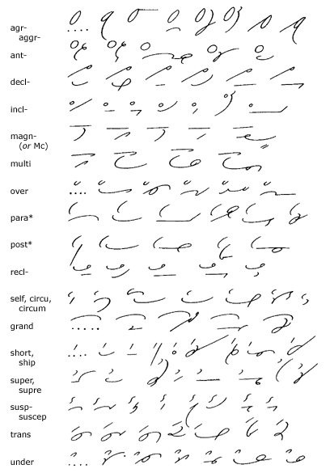
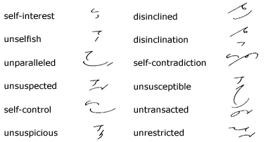
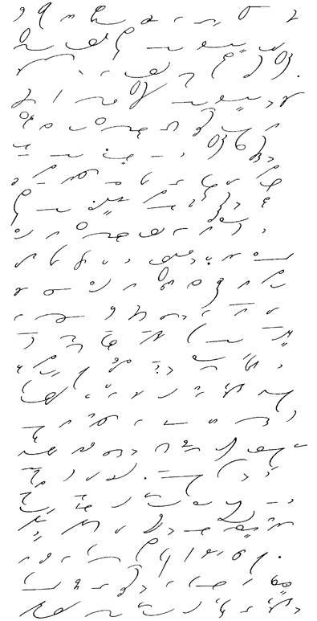

Unit 29
214. Analogical Word-Beginnings—Disjoined
(Continued)

*The prefix para is written
above the rest of the word; post is written on the line
close before the following character.
215. Key
to Analogical Word-Beginnings
1. agree, agreeable, agreement,
agriculture, aggravate, aggressive, disagree, disagreeable.
2. anticipate, anticipation, antagonize, antecedent,
anterior.
3. declare, declaration, decline, declined,
declaim, declamation.
4. include, incline, inclination, inclined,
inclusion, inclusive, inclement.
5. magnify, magnitude, magnificent, magnet,
McNeil.
6. multitude, multiple, multiply, multiplication.
7. over, overlook, overtake, overcoat, overthrow,
overcome.
8. paragraph, parallel, paramount, paradise,
paralysis, parasite.
9. postage, postal, postmaster, postpone,
postman.
10. recline, reclined, reclaim, reclamation,
recluse.
11. selfish, self-confident, self-control,
circular, circulation, circumstances, circus.
12. grand, grandson, granddaughter, grandmother,
grandfather.
13. short, shorter, shorten, shortage, shortly,
shortsighted, shipshape, shipwreck, shipyard.
14. superintend, superior, supervise, support,
supreme, supremacy, superb, supersede.
15. suspect, suspected, suspicious, suspicion,
susceptible, suspend, suspense, suspension.
16. transact, transacted, transaction, transfer,
translation, transport, transfix.
17. under, understanding, undertake, understood,
underneath, underline, underwrite.
216. Analogical
Word-Beginnings—Compounds
(Continued)

217. Reading
and Dictation Practice
